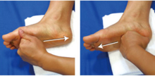

エミューオイルの使い方(マッサージ編)
実は、エミューオイルは潤滑性や浸透性、保湿性の高さだけでなく、真骨頂は、優れた抗炎症作用と血液促進作用も備えている点にあります。
日本では、腰痛、関節痛や筋疲労のケアに、マッサージオイルとして利用することが大きく注目されています。
●マッサージを行う前に
オイルを手に取りよく擦ります。オイルが手に馴染み、暖かくなってきたらOK！マッサージを始めましょう。
マッサージの強さは、心地良いと感じる強さで行いましょう。痛みがでるようであれば強すぎです。
マッサージを始める前に必ず確認しましょう！下記のような場合には、医師にご相談してください。
・腫れ、炎症、痛み、発熱などはありませんか？
・静脈瘤、傷口、やけど、湿疹などはありませんか？
・妊娠中、通院中ではありませんか？
首・肩 マッサージ
肩こりや眼の疲れ、疲労回復に。野球・ゴルフなどで疲れたカラダに。
- 肘は90度に曲げておきます。
三角筋～上腕全体をつかみながらもんでいきます。
(左右共に、行きかえりで8回)
- 手のひら全体で把握して、上から下へさすります。
(左右共に8回)
- 耳の中央やや下にある軟骨の硬い部分辺りを、指でつまんだり、もんだりします。(両耳同時で8回) 肩こりに効果あり
- 首の根本と肩先の中間(肩井)に指をあて、つかんでもみます。
肩井は、肩こりの改善に有効です
- 肩井に中指をおきながら、チキンウィングをします。時計回り、反時計回り(各4週)。これを左右ともに、2セット。
- 首～肩の上までを、円を描くようにマッサージをします。
(両手同時で8回)
- うなじ・髪の生え際(風池)を、母指で押します。(8秒)
風池は、頭部・眼の血液循環の改善に効果があると言われています。
- 肩の上げ下げ運動をします。(8回)

手 マッサージ
手は意外に疲れ易い部分。リラックス効果も高いので、ゆっくりほぐしてあげましょう。
- 手の間に指を入れ、少し圧を加えながら、関節運動をします。
(8回)
- 第2-3関節に第2指を入れ、母指で母指球のマッサージをします。(左右共に8回)
手のひらも同様にしましょう。
- 手のひらのストレッチをします。(8秒)
- 爪の両側(井穴)を押します。(4回)その後、指のマッサージをします。(4回)左右すべての指に行いましょう。
井穴は、冷え性などに効果ありと言われています。
- 合谷(人差し指と親指の付け根あたり)を、第一関節で押します。(左右共に8回)
合谷は、肩こり・眼精疲労・腰痛などに効果があると言われています。
- 母指～四指でくるむようにして、手首のマッサージをします。
(左右共に8回)
- 手背全体へのマッサージをします。(左右共に8回)
- グーパー運動をします。(両手同時で8回)
これに似たもので、グーチョキパー運動もあります。
腰 マッサージ
肩こりや眼の疲れ、疲労回復に。野球・ゴルフなどで疲れたカラダに。脊柱管狭窄症のマッサージにもおすすめです。
- 脊椎から指2本分外側で、へその高さに位置を、上限にこすります。(8回) 不眠症・耳鳴り・腎臓病・泌尿器系などに効果があると言われています。
- 腰部サイドを母指で押します。(8回)
- おしりの肉を持ち上げるように
下から上へマッサージをします。(8回)
- 脇腹の肉を前側に持ってくるような感じで、マッサージをします。(8回)
- 手を重ねて時計まわりに、お腹のマッサージをします。(8回)
- 上から下へ、お腹のマッサージをします。(8回)
- 腰全体を横からつかむようにして、マッサージをします。(8回)

- やりにくい・届かないなどの場合は、ゴルフボールやテニスボールを使用し、気になる部分にあててコロコロと転がすようにマッサージしてみましょう。
足 マッサージ
足は日常生活のなかでは非常に負担がかかる部位で、健康管理には重要な部分です。しっかりセルフケアしましょう。
立つ・歩く・走るなど、すべての基本は「足」です。その日の疲れ、むくみなどはその日のうちに取りましょう。
- 両母指で足の裏全体をもみます。(8回)
湧泉は土踏まずのやや上方にあり、足の指を曲げたときにへこむところです。顔や足のむくみ、疲れ、冷え性などに効果があると言われています。
- こぶしを使い、足のうら全体のマッサージをします。(8回)
- 
- 足指間に手の指を入れ、関節のストレッチをします。
- 手のおや指で、足指間(太衛・行間)のマッサージをします。(8回)
太衛・行間は、更年期障害に効果があると言われています。
- 全体を包み込むようにマッサージをします。
- 足首の運動をします。
時計回し。(4回)
反時計回し。(4回) 
- くるぶしから膝の方へ、両手でつかみながら引き上げるマッサージをします。(8回)
- 手の平を使って、円を描くようにまわしながらマッサージをします。(8回)
- 内くるぶしから指4本分上の脛骨の内側(三陰交)を押します。(8秒)
三陰交は、生理痛・婦人科疾患・むくみ・排泄機能への働きかけなどに効果があると言われています。
- 内ひざを曲げたときにできるしわの先端あたり(曲泉)を押します。(8秒)
曲泉は、膝痛・気力回復に効果があると言われています。
- 膝蓋骨のまわりを、四指を使ってマッサージします。(両手同時で8回)
- 両手で足首の方から引き上げる、仕上げのマッサージをします。
監修：伊藤句里子
日本体育大学卒業後、鍼灸師・あん摩マッサージ指圧師、健康運動実践指導者の資格を取得。
2002年オーストラリアに留学し、エミューオイルを用いたスポーツマッサージを習得。
日本体育協会公認アスレチックトレーナー、元日本代表（ユニバーシアード）女子バレーボールチームチーフトレーナー、花田学園日本鍼灸理療専門学校講師。

※クリスタル石鹸のみ全国送料500円(税別)、2個以上や他商品とご注文の場合は送料無料です。(泡立てネットを除く)

- エミューオイルの使い方(スキンケア編)
- エミューオイルを使ったスキンケア方法はこちらから